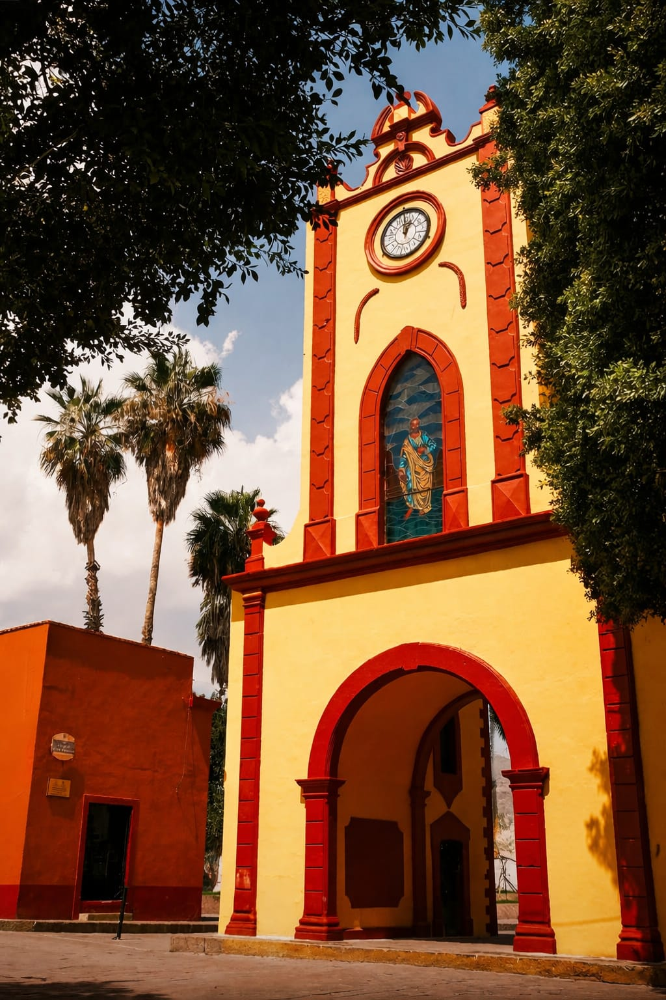

Descubre el origen de Tolimán, desde su raíz náhuatl, su colonización en 1560 y su evolución hasta convertirse en ciudad Patrimonio de la Humanidad.

La crónica de los monjes franciscanos que fundaron el convento en 1583 y se versaron en la lengua otomí para evangelizar la región.

Antiguo e histórico centro de adoración prehispánica junto a la Peña de Bernal que evolucionó en un pilar comercial clave del municipio.

Tierra de profunda resistencia cultural otomí, danzas rituales heredadas y escenario de importantes cuarteles militares en 1849.

Pequeños santuarios familiares de ascendencia otomí-chichimeca que resguardan la fe y el culto sagrado a los antepasados.

La crónica de la imponente ofrenda monumental de flora y fe de más de 20 metros alzada a pura fuerza humana en honor a San Miguel.

La antigua congregación de indios naturales que se convirtió en el epicentro ritual de las danzas autóctonas del semidesierto.

El relato histórico detrás de las técnicas ancestrales del telar de cintura y el intrincado arte colonial del deshilado.
Primeros asentamientos importantes.
Desarrollo de haciendas y agricultura.
Conservación de tradiciones otomíes.
Reconocimiento UNESCO.
Tolimán forma parte del semidesierto queretano, conservando vivas sus tradiciones otomí-chichimecas y siendo reconocido por la UNESCO como patrimonio cultural.
El Fraile es una de las formaciones rocosas más emblemáticas de Tolimán, rodeada de leyendas, cultura y tradición del semidesierto.
La Hacienda San Antonio fue parte importante del desarrollo agrícola y económico de la región.
Una de las construcciones históricas más representativas del municipio y símbolo del pasado colonial.